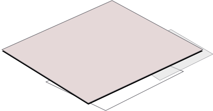

       
  <!-- Section 2 -->
  <!-- UX -->
   <!--  <div id="ux" class="panels">
      <div class="row-content-body">
        <div id="ux-link" style="text-align: center; margin-bottom: 100px; position: relative;" class="col-xs-12 col-sm-12 col-md-12 col-lg-12">

          <h1 style="margin-top: 10px; padding-bottom:30px;" id="ux_title" class="title">Design Sprints</h1>
              <p class="intro">I follow a process to answer critical business questions through design, prototyping, and testing ideas with customers. I do not waste time and employ the techniques used in design sprints. This approach is adaptable to any industry, idea or company of any size.</p> -->

             <!--  <p class="intro">Outcome change depending on the brief bu often include in depth user research and user profiles, detailed IA plans, user journeys, flow diagrams, comprehensive experience maps, wireframes and design assets. In short , I’m an allrounder.</p> -->
          <!-- Image -->
           <!--  <div style="margin: 0; padding: 0;" class="container" id="section_image_container"> -->
               <!--  <div id="ux_layer_6" class="ux-layer" style="z-index: 999; z-index: 998;  position: absolute; margin-left: auto;margin-right: auto; left: 0; right: 0; margin-top: 47px; margin-left: 153px; ">
                  
                </div>
                  <div id="ux_layer_5" class="ux-layer" style="z-index: 999; z-index: 998;  position: absolute; margin-left: auto;margin-right: auto; left: 0; right: 0; margin-top: 47px; margin-left: 153px; ">
                    
                  </div> -->
                      <!-- <div id="ux_layer_3" class="ux-layer" style="z-index: 997;  position: absolute; margin-left: auto;margin-right: auto; left: 0; right: 0;  margin-top: 43px; margin-left: 154px; ">
                       
                     </div> -->

         <!--          <div class="ux-image-container" id="ux-image-trigger">   
                    <div id="ux_layer_4" class="ux-layer-4" class="ux-layer" style="z-index: 998;  position: absolute; margin-left: auto;margin-right: auto; left: 0; right: 0;  margin-top: 247px; margin-left: 10px ">
                      
                     </div>
                      <div id="ux_layer_2" class="ux-layer-2" class="ux-layer" style="z-index: 999; z-index: 998;  position: absolute; margin-left: auto;margin-right: auto; left: 0; right: 0; margin-top: 207px; margin-right: 474px; ">
                      
                      </div>
                     <div id="ux_layer_11" class="ux-layer-11" class="ux-layer" style="z-index: 996; position: absolute; margin-left: auto;margin-right: auto; left: 0; right: 0;  margin-top: 315px; margin-right: 250px;"">
                      
                     </div>
                  </div>
                <div id="ux_layer_1" class="ux-layer" style="z-index: 996;">
                  
               </div>
          </div> 
        </div>
      </div>
    </div> -->